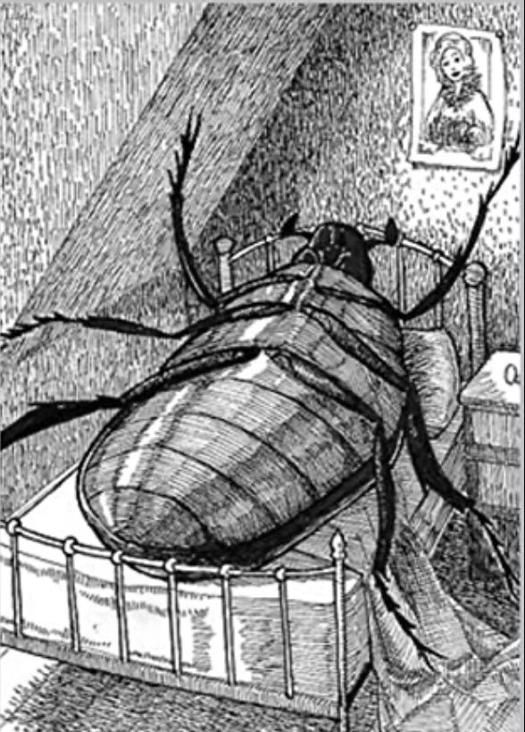

EXAMPLE FILLER TEXT GENERATED BY CHATGPT
In the grand scheme of things, nothing holds a place of peculiar importance. It is neither here nor there, yet somehow always present. This article explores the subtle yet profound influence of nothing — or rather, attempts to.

The idea of nothing is difficult to visualize, which makes it a perfect candidate for an image that shows absolutely nothing — a blank canvas, a void, or maybe just a transparent PNG.
| Context | Description |
|---|---|
| Conversations | Saying “nothing” often implies something. |
| Productivity | Taking a break is sometimes labeled as nothing. |
| Philosophy | Nothing is a serious topic of non-discussion. |
Even though it’s often overlooked, nothing can be surprisingly impactful in day-to-day life. Consider the following:
In the end, this article has successfully explained very little. But in doing so, it may have demonstrated the value of nothing — a concept that is everywhere and nowhere, all at once.